This section of the tutorial introduces the basic concepts behind the automatic segmentation component of SNAP. There are no action items in this section, just an explanation of the theory and terminology that must be understood to use SNAP effectively. All examples in this section will be made using two-dimensional images. The concepts, however, extend to three dimensions in a straight forward way.
The methodology behind SNAP is called snake evolution. The term snake is used to refer to a closed curve (or surface in 3D) that represents a segmentation. In snake evolution methods, the snake evolves from a very rough estimate of the anatomical structure of interest to a very close approximation of the structure, as illustrated in the figure below.
| 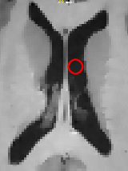 | 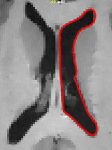 |
The red curve is this figure is called the snake. It starts out initialized as a small circle inside of the ventricle, and over time it grows, or evolves, to take shape of the ventricle. So how does it do that?
The snake evolution is governed by a mathematical equation that describes the velocity of every point on the snake at any particular time. The velocity of each point depends (1) on the shape of the snake and (2) on the intensities of the image in the neighborhood of the point. Here is an illustration of some of the velocities that can act on the snake:
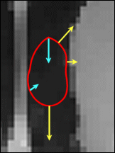
In this picture, velocities acting on some of the points are shown as blue and yellow arrows. The velocity vectors always point in the direction perpendicular to the snake. The yellow velocities depend on image properties: they are stronger in the regions of the image where the intensity is homogeneous and weaker where there are edges (discontinuities) in image intensity. By making the snake expands much slower at image edges than at homogeneous regions, we force the snake to assume to form of these regions. The blue velocities depend on the shape of the snake: they are longer at points where the snake is more curved and shorter where the snake is more straight. By applying higher inward velocities at places where the snake is sharp, we cause it to maintain a smooth shape.
The movement of a point on the snake is determined by the sum of the velocities at that point. The figure below shows how the snake evolves under the effect of velocities. The dashed outline represents the snake at the next time interval.
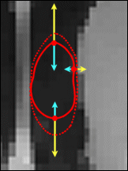
When interacting with the SNAP automatic segmentation mode, the user needs to specify three things:
In the following three subsections, we will address these three questions correspondingly.
As mentioned above, some of the velocities that drive snake evolution depend on the image intensities. In SNAP, this dependency is represented by the so-called feature image . The feature image is computed by applying a particular function uniformly to the entire image. Image dependent velocities are proportional to the value of the feature image.
Image-dependent snake propagation velocities are proportional to the value of the feature image. |
SNAP defines two distinct ways to compute feature images. The first causes the snake to slow down near edges, or discontinuities, of intensity. The second causes the snake to attract to boundaries of regions of uniform intensity. It is very important to understand the effect of the feature image on snake evolution because the proper construction of the feature image is the one most important step in getting a good segmentation.
We will begin by examining the edge feature image, an example of which is shown below:
| 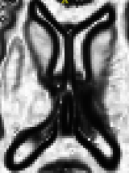 | 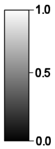 |
The edge feature function takes values between zero and one. It is close to zero at strong edges in the image, and it is close to one in regions of uniform intensity. The value of the feature image at a pixel is independent of the intensity level of the input image; it only depends on the differences in intensity between neighboring pixels.
The edge-based feature image is computed using the following pipeline:
| 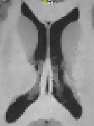 | 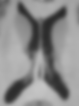 | 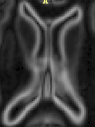 | |
greylevel image |
blurred image |
grad. magnitude |
edge feature image |
The steps of the pipeline are illustrated by the images above. As a user, you have the option to change the amount of blurring that is done. The more blurring is performed, the less likely are the subtle edges in the image to affect the segmentation. You also have control over the function used to remap the gradient magnitude image into the feature image. This lets you increase or decrease the contrast of the feature image. You will learn how to construct the edge feature image in a later section of the tutorial.
Now, let's examine the so called region competition feature images. Region competition is based on thresholding the image intensities, i.e., classifying them into background and foreground intensities. Based on the user's specifications, a range of intensities is designated as foreground, or object intensities.The intensities outside of the range are defined as background. A feature image is constructed by assigning values near 1.0 to foreground intensities, assigning values near -1.0 to background intensities, and assigning values close to zero to intensitues that are on the borderline between foreground and background. This is illustrated below: the left picture shows the histogram of the intensities in the greylevel image. The intensities between 45 and 63 are chosen as foreground, the rest as background. The function plotted in picture on the right maps the intensities between 45 and 63 to positive values, and it maps the rest of the intensities to the negative values.
| 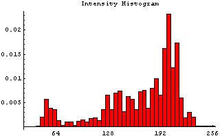 | 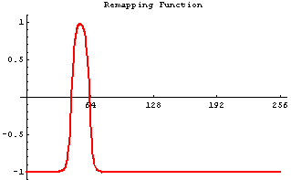 |
The feature image resulting from this operation is shown below. The caudate appears as a bright region with positive values of the feature, and the surrounding structures appear dark.
| 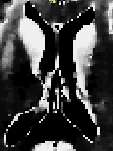 | 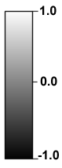 |
Unlike the edge feature image whose values are non-negative, the region competition feature image takes both positive and negative values. This means that the image-dependent velocities acting on the snake act outward in places where the feature image is positive (i.e., inside the structure of interest), and they act inward in places where the feature image is negative. These velocities are illustrated below.
These velocities force the snake to fit the boundary of the foreground region. Here is an example of snake evolution using the region competition feature function. The snake is initialized both inside and outside of the caudate nucleus. After a few iterations, however, it fits the boundary caudate by shrinking in the background region and growing in the foreground region.
| 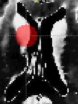 | 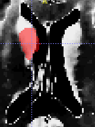 | 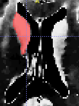 |
Note that in this image we show the interior of the snake, rather than its boundary, as was shown in an earlier illustration. This is how the snake is actually visualized in SNAP.
In this subsection we will discuss in more detail the different types of velocities for image propagation. There are three types of velocities that can be applied in SNAP to drive snake evolution.
Let us examine each velocity type in more detail.
This is the most common velocity used in SNAP. It is proportional to the value of the feature image. The constant of proportionality can be set to be positive, in which case positive values of the feature image cause this velocity to point outwards, or negative, in which case positive values of the feature image cause this velocity to point inwards. In a homogeneous region of the feature image, the propagation velocity is constant and causes the snake to expand (or contract) at a unit speed.
This velocity is used to control the shape of the evolving snake, and it can sometimes prevent the snake from leaking into adjacent structures. The curvature velocity acts inwards and is approximately proportional to the curvature of the snake at the point. Sharp corners in the snake's boundary have high curvature, while points where the snake is straight have low curvature. The effect of curvature velocity is to slow down the snake evolution at places of high curvature, effectively smoothing out the sharp corners that may otherwise be formed.
The advection velocity is the most difficult of the three velocities to visualize, but it is very important because it can have a dramatic effect on the quality of the segmentation. The advection velocity is used only in conjunstion with the edge feature image; it is not used with the region competition feature image. In qualitative terms, it causes the snake to slow down or stop as it approaches edges in the greyscale image. More precisely, the velocity is defined by the dot product of the unit vector perpendicular to the snake and the gradient vector of the feature image. That means that when the snake is parallel to an image edges and close to it, the advection force acting inwards on the snake is greatest. The illustration below shows the gradient vectors of the feature image and the corresponding advection velocities.
As mentioned, the snake can be initialized very roughtly, using a circular bubble. More than one bubble can be used to initialize the snake. As the snake evolves, its disconnected components may merge together, as illustrated by the sequence of images below.
| 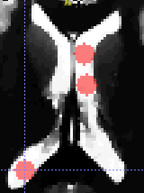 | 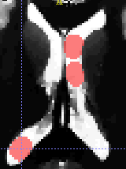 | 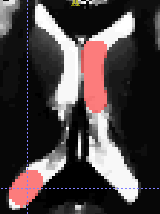 | 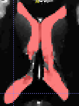 |
The following rule is improtant for proper snake initialization :
When using the edge feature image, make sure that the initialization is fully contained in the anatomical structure that you want to segment, since the snake propagates outwars only. When using the region competition feature image, the initialization may lie outside of the structure of interest, since the snake propagates both inward and outward. |
One does not need to fully understand the mathematical theory behind snake evolution in order to use it in SNAP. Basically, a snake is a closed curve or collection of closed curves in 2D, and a closed surface or collection of closed surfaces in 3D. Snake evolvution is described by the sum of different types of velocities that act on each point of the snake in the direction perpendicular to the snake. Some of these velocities are image dependant, while others depend on the shape of the snake. The image dependant velocities are defined in terms of the feature image, to which they are proportional. SNAP can create two types of feature images, one based on edges in the input image, the other based on regions of uniform intensity. SNAP supports three types of velocities: the image dependent propagation velocity, the shape dependent curvature velocity and the image dependent advection velocity.
In order to perform an automatic segmentation in SNAP, the user needs to (1) choose the type, edge or region, of the feature image to be used, (2) select the parameters used to compute the feature image, (3), initialize the snake using spherical bubbles, and (4) choose the relative weights of the different types of velocities that drive snake evolution. The following two sections of the tutorial describe how these tasks are performed through the SNAP user interface.